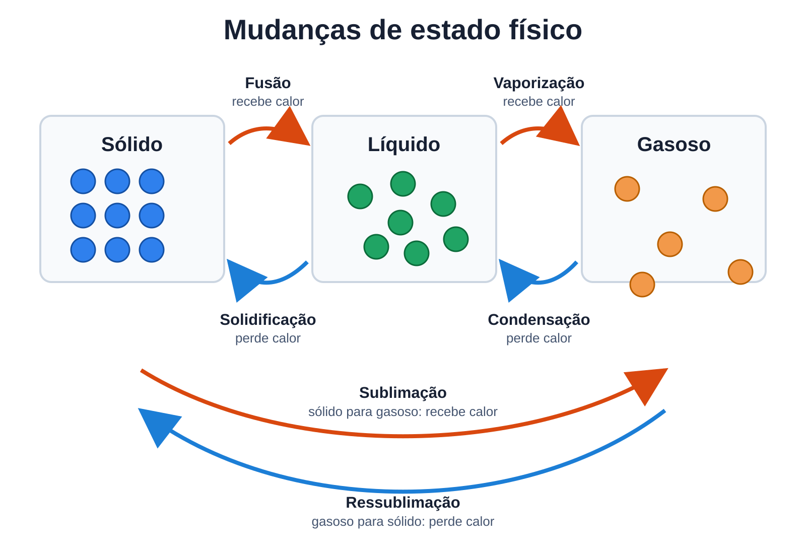
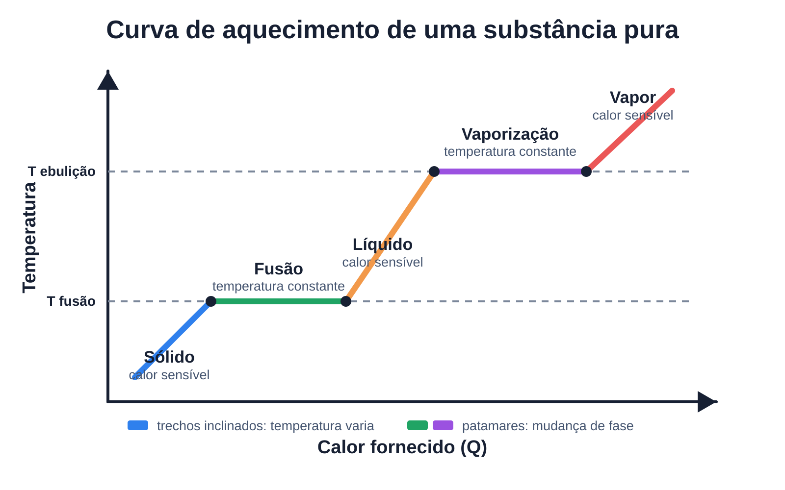
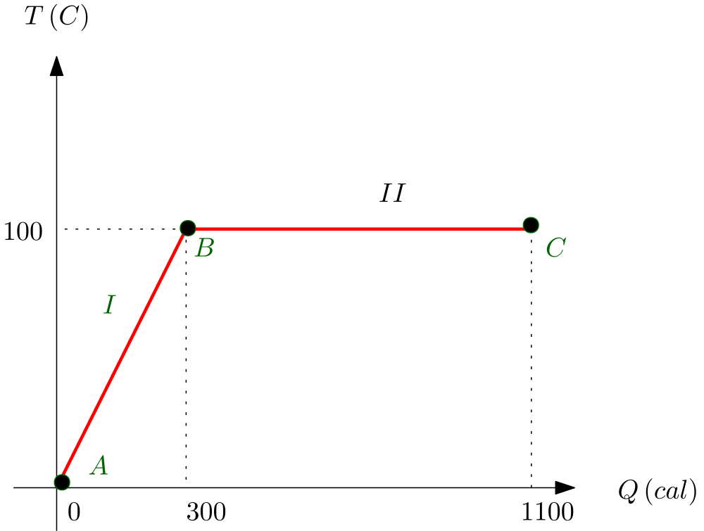

Objetivos
Ao final desta aula, você deverá ser capaz de:
- Diferenciar calor sensível e calor latente.
- Reconhecer as principais mudanças de estado físico da matéria.
- Aplicar a expressão do calor latente em problemas simples.
- Resolver situações que envolvem aquecimento, mudança de fase e resfriamento.
- Interpretar curvas de aquecimento e resfriamento.
- Explicar o comportamento anômalo da água entre \(0\,^\circ\text{C}\) e \(4\,^\circ\text{C}\).
- Relacionar os conceitos estudados com fenômenos do cotidiano.
Situação-Problema
Imagine uma panela com água e gelo sobre uma chama. No início, há gelo a \(0\,^\circ\text{C}\) misturado com água líquida também a \(0\,^\circ\text{C}\).
Mesmo com a chama ligada, durante certo intervalo de tempo o termômetro continua marcando \(0\,^\circ\text{C}\).
Pergunta para pensar 1: se a água está recebendo calor, por que a temperatura não aumenta imediatamente?
Isso acontece porque a energia recebida está sendo usada para derreter o gelo, isto é, para mudar a água do estado sólido para o estado líquido. Enquanto essa mudança de fase ocorre, a temperatura permanece constante.
Agora imagine uma chaleira com água fervendo. Enquanto há água líquida sendo transformada em vapor, a temperatura da água permanece aproximadamente \(100\,^\circ\text{C}\) ao nível do mar.
Pergunta para pensar 2: por que a água continua recebendo energia e, mesmo assim, sua temperatura não passa de \(100\,^\circ\text{C}\) durante a ebulição?
Nesse caso, a energia recebida é usada para transformar água líquida em vapor. Essa energia não aumenta a temperatura; ela altera o estado físico da substância.
Essas situações mostram que nem todo calor recebido provoca aumento de temperatura. Às vezes, o calor recebido provoca mudança de estado físico. Esse tipo de energia está relacionado ao calor latente.

Na imagem, observamos gelo e água líquida juntos. Essa situação é útil para lembrar que uma mesma substância pode apresentar mais de uma fase ao mesmo tempo. Quando o gelo está derretendo, a energia recebida é usada principalmente para a fusão, e não para aumentar imediatamente a temperatura.
Além disso, o gelo aparece flutuando na água. Esse fato será retomado no estudo do comportamento anômalo da água, pois está relacionado à menor densidade do gelo em comparação com a água líquida.
Revisão: Calor Sensível
Na aula anterior, estudamos o calor sensível, que é a quantidade de calor trocada por um corpo quando ocorre variação de temperatura.
Para calcular o calor sensível, usamos:
\[ \boxed{Q = m \cdot c \cdot \Delta \theta} \]
Onde:
- \(Q\) é a quantidade de calor;
- \(m\) é a massa;
- \(c\) é o calor específico;
- \(\Delta \theta = \theta_f - \theta_i\) é a variação de temperatura.
Exemplos de calor sensível:
- água líquida aquecendo de \(20\,^\circ\text{C}\) para \(80\,^\circ\text{C}\);
- gelo aquecendo de \(-10\,^\circ\text{C}\) para \(0\,^\circ\text{C}\);
- vapor d’água esfriando de \(120\,^\circ\text{C}\) para \(100\,^\circ\text{C}\).
Em todos esses casos, a temperatura muda e o estado físico permanece o mesmo.
Mudanças de Estado Físico
A matéria pode se apresentar, em situações comuns, nos estados sólido, líquido e gasoso. Quando uma substância recebe ou perde calor, ela pode mudar de um estado físico para outro.
As principais mudanças de estado físico são:
- Fusão
- Passagem do estado sólido para o estado líquido. Ocorre com recebimento de calor. Exemplo: gelo derretendo em um copo.
- Solidificação
- Passagem do estado líquido para o estado sólido. Ocorre com perda de calor. Exemplo: água virando gelo no congelador.
- Vaporização
- Passagem do estado líquido para o estado gasoso. Ocorre com recebimento de calor. Exemplo: água fervendo em uma panela.
- Condensação
- Passagem do estado gasoso para o estado líquido. Ocorre com perda de calor. Exemplo: gotículas na parte externa de um copo gelado.
- Sublimação
- Passagem direta do estado sólido para o estado gasoso. Ocorre com recebimento de calor. Exemplo: gelo seco passando diretamente para gás.
- Ressublimação
- Passagem direta do estado gasoso para o estado sólido. Ocorre com perda de calor. Exemplo: formação de geada em superfícies muito frias.
Durante uma mudança de estado físico de uma substância pura, sob pressão constante, a temperatura permanece constante.
Na mudança de fase, o calor recebido ou perdido altera a organização das partículas, não a temperatura da substância.

A imagem resume os caminhos possíveis entre os estados sólido, líquido e gasoso. As setas vermelhas indicam processos em que a substância recebe calor: fusão, vaporização e sublimação. As setas azuis indicam processos em que a substância perde calor: solidificação, condensação e ressublimação.
Esse esquema ajuda a perceber que as mudanças de fase podem ocorrer em sentidos opostos. Por exemplo, fusão e solidificação são processos inversos; vaporização e condensação também são processos inversos.

A imagem mostra o gelo seco, que é dióxido de carbono sólido, passando diretamente para o estado gasoso. Esse processo é chamado de sublimação. A “fumaça” visível é formada principalmente pela condensação do vapor de água do ar ao redor, resfriado pelo gelo seco.
Esse exemplo é importante porque mostra que nem toda substância precisa passar pelo estado líquido em condições comuns. Dependendo da temperatura e da pressão, a mudança pode ocorrer diretamente entre sólido e gás.
Calor Latente
O calor latente é a quantidade de calor que uma substância recebe ou perde durante uma mudança de estado físico, sem variação de temperatura.
A palavra “latente” significa algo que está escondido ou não aparece diretamente. Nesse caso, o calor está sendo transferido, mas o efeito não aparece como aumento ou diminuição da temperatura.
Para calcular o calor latente, usamos:
\[ \boxed{Q = m \cdot L} \]
Onde:
- \(Q\) é a quantidade de calor envolvida na mudança de fase;
- \(m\) é a massa da substância;
- \(L\) é o calor latente da mudança de fase.
Unidades comuns:
- \(Q\) em calorias (cal);
- \(m\) em gramas (g);
- \(L\) em \(\text{cal}/\text{g}\).
Também podemos usar o Sistema Internacional:
- \(Q\) em joules (J);
- \(m\) em quilogramas (kg);
- \(L\) em \(\text{J}/\text{kg}\).
Valores Importantes Para a Água
Em muitos exercícios de Ensino Médio, usamos os seguintes valores aproximados:
- calor específico do gelo: \(c_{\text{gelo}} = 0{,}50\,\text{cal}/(\text{g}\,^\circ\text{C})\);
- calor específico da água líquida: \(c_{\text{água}} = 1{,}00\,\text{cal}/(\text{g}\,^\circ\text{C})\);
- calor específico do vapor: \(c_{\text{vapor}} = 0{,}48\,\text{cal}/(\text{g}\,^\circ\text{C})\);
- calor latente de fusão da água: \(L_f = 80\,\text{cal}/\text{g}\);
- calor latente de vaporização da água: \(L_v = 540\,\text{cal}/\text{g}\).
O valor \(L_f = 80\,\text{cal}/\text{g}\) significa que cada grama de gelo a \(0\,^\circ\text{C}\) precisa receber \(80\,\text{cal}\) para se transformar em água líquida a \(0\,^\circ\text{C}\).
O valor \(L_v = 540\,\text{cal}/\text{g}\) significa que cada grama de água líquida a \(100\,^\circ\text{C}\) precisa receber \(540\,\text{cal}\) para se transformar em vapor a \(100\,^\circ\text{C}\).

Na ebulição, formam-se bolhas de vapor no interior do líquido. Ao nível do mar, a água pura entra em ebulição por volta de \(100\,^\circ\text{C}\). Enquanto a vaporização acontece, a temperatura da água permanece aproximadamente constante, pois o calor recebido está sendo usado para separar as moléculas e mudar o estado físico.
Esse é um dos motivos pelos quais o calor latente de vaporização da água é alto: transformar água líquida em vapor exige uma grande quantidade de energia.
Exemplo 6.1 - Fusão do Gelo
Determine a quantidade de calor necessária para derreter completamente \(50\,\text{g}\) de gelo a \(0\,^\circ\text{C}\).
Dado: \(L_f = 80\,\text{cal}/\text{g}\).
Dados:
- \(m = 50\,\text{g}\)
- \(L_f = 80\,\text{cal}/\text{g}\)
Cálculo:
\[ Q = mL \]
\[ Q = 50 \cdot 80 \]
\[ Q = 4000\,\text{cal} \]
Resposta: são necessárias \(4000\,\text{cal}\) para derreter o gelo.
Exemplo 6.2 - Vaporização da Água
Determine a quantidade de calor necessária para vaporizar completamente \(20\,\text{g}\) de água líquida a \(100\,^\circ\text{C}\).
Dado: \(L_v = 540\,\text{cal}/\text{g}\).
Dados:
- \(m = 20\,\text{g}\)
- \(L_v = 540\,\text{cal}/\text{g}\)
Cálculo:
\[ Q = mL \]
\[ Q = 20 \cdot 540 \]
\[ Q = 10800\,\text{cal} \]
Resposta: são necessárias \(10800\,\text{cal}\).
Calor Latente Recebido e Cedido
Quando uma substância muda para um estado físico de maior energia, ela recebe calor:
- fusão: sólido \(\rightarrow\) líquido;
- vaporização: líquido \(\rightarrow\) gasoso;
- sublimação: sólido \(\rightarrow\) gasoso.
Nesses casos, normalmente consideramos \(Q > 0\).
Quando uma substância muda para um estado físico de menor energia, ela perde calor:
- solidificação: líquido \(\rightarrow\) sólido;
- condensação: gasoso \(\rightarrow\) líquido;
- ressublimação: gasoso \(\rightarrow\) sólido.
Nesses casos, normalmente consideramos \(Q < 0\).
Em muitos exercícios, o objetivo é calcular o módulo da quantidade de calor. Por isso, o resultado pode aparecer apenas como um valor positivo acompanhado da ideia de “calor liberado” ou “calor recebido”.
Curva de Aquecimento da Água
Considere uma amostra de gelo inicialmente a \(-20\,^\circ\text{C}\) sendo aquecida até se transformar em vapor a \(120\,^\circ\text{C}\), sob pressão normal.
O processo pode ser dividido em cinco etapas:
- Aquecimento do gelo de \(-20\,^\circ\text{C}\) até \(0\,^\circ\text{C}\).
- Fusão do gelo a \(0\,^\circ\text{C}\).
- Aquecimento da água líquida de \(0\,^\circ\text{C}\) até \(100\,^\circ\text{C}\).
- Vaporização da água a \(100\,^\circ\text{C}\).
- Aquecimento do vapor de \(100\,^\circ\text{C}\) até \(120\,^\circ\text{C}\).
Nas etapas 1, 3 e 5 ocorre calor sensível, pois a temperatura varia. A fórmula usada é \(Q = mc\Delta\theta\).
Nas etapas 2 e 4 ocorre calor latente, pois há mudança de estado físico e a temperatura permanece constante. Na fusão, usamos \(Q = mL_f\). Na vaporização, usamos \(Q = mL_v\).

A curva de aquecimento mostra que a temperatura não aumenta de maneira uniforme durante todo o processo. Nos trechos inclinados, a temperatura varia e temos calor sensível. Nos trechos horizontais, a temperatura fica constante e temos calor latente.
Os patamares do gráfico representam mudanças de fase. Neles, a energia fornecida não aumenta a agitação média das partículas; ela altera a organização entre elas, permitindo a passagem de um estado físico para outro.
Problemas com Calor Sensível e Calor Latente
Quando um problema envolve aquecimento ou resfriamento com mudança de fase, devemos dividir o processo em etapas.
O procedimento geral é:
- Identificar o estado físico inicial e a temperatura inicial.
- Identificar o estado físico final e a temperatura final.
- Separar o caminho em etapas de aquecimento, resfriamento e mudança de fase.
- Usar \(Q = mc\Delta\theta\) nas etapas com variação de temperatura.
- Usar \(Q = mL\) nas etapas com mudança de fase.
- Somar as quantidades de calor de todas as etapas.
Exemplo 6.3 - Gelo a Temperatura Negativa
Qual quantidade de calor é necessária para transformar \(100\,\text{g}\) de gelo a \(-10\,^\circ\text{C}\) em água líquida a \(20\,^\circ\text{C}\)?
Dados:
- \(c_{\text{gelo}} = 0{,}50\,\text{cal}/(\text{g}\,^\circ\text{C})\);
- \(c_{\text{água}} = 1{,}00\,\text{cal}/(\text{g}\,^\circ\text{C})\);
- \(L_f = 80\,\text{cal}/\text{g}\).
Etapa 1: aquecer o gelo de \(-10\,^\circ\text{C}\) até \(0\,^\circ\text{C}\).
\[ Q_1 = mc_{\text{gelo}}\Delta\theta \]
\[ Q_1 = 100 \cdot 0{,}50 \cdot (0 - (-10)) \]
\[ Q_1 = 500\,\text{cal} \]
Etapa 2: derreter o gelo a \(0\,^\circ\text{C}\).
\[ Q_2 = mL_f \]
\[ Q_2 = 100 \cdot 80 \]
\[ Q_2 = 8000\,\text{cal} \]
Etapa 3: aquecer a água de \(0\,^\circ\text{C}\) até \(20\,^\circ\text{C}\).
\[ Q_3 = mc_{\text{água}}\Delta\theta \]
\[ Q_3 = 100 \cdot 1{,}00 \cdot 20 \]
\[ Q_3 = 2000\,\text{cal} \]
Calor total:
\[ Q_{\text{total}} = Q_1 + Q_2 + Q_3 \]
\[ Q_{\text{total}} = 500 + 8000 + 2000 \]
\[ Q_{\text{total}} = 10500\,\text{cal} \]
Resposta: são necessárias \(10500\,\text{cal}\).
Exemplo 6.4 - Água Fervendo e Virando Vapor
Determine a quantidade de calor necessária para transformar \(30\,\text{g}\) de água líquida a \(25\,^\circ\text{C}\) em vapor a \(100\,^\circ\text{C}\).
Dados:
- \(c_{\text{água}} = 1{,}00\,\text{cal}/(\text{g}\,^\circ\text{C})\);
- \(L_v = 540\,\text{cal}/\text{g}\).
Etapa 1: aquecer a água de \(25\,^\circ\text{C}\) até \(100\,^\circ\text{C}\).
\[ Q_1 = mc\Delta\theta \]
\[ Q_1 = 30 \cdot 1{,}00 \cdot (100 - 25) \]
\[ Q_1 = 2250\,\text{cal} \]
Etapa 2: vaporizar a água a \(100\,^\circ\text{C}\).
\[ Q_2 = mL_v \]
\[ Q_2 = 30 \cdot 540 \]
\[ Q_2 = 16200\,\text{cal} \]
Calor total:
\[ Q_{\text{total}} = 2250 + 16200 = 18450\,\text{cal} \]
Resposta: são necessárias \(18450\,\text{cal}\).
Exemplo 6.5 - Resfriamento com Condensação
Uma massa de \(10\,\text{g}\) de vapor d’água a \(100\,^\circ\text{C}\) condensa completamente, formando água líquida a \(100\,^\circ\text{C}\). Determine a quantidade de calor liberada.
Dado: \(L_v = 540\,\text{cal}/\text{g}\).
\[ Q = mL_v \]
\[ Q = 10 \cdot 540 \]
\[ Q = 5400\,\text{cal} \]
Resposta: o vapor libera \(5400\,\text{cal}\) ao condensar.
Potência Térmica e Mudança de Fase
Quando uma fonte térmica transfere calor com potência constante, podemos relacionar calor e tempo pela expressão:
\[ \boxed{P = \frac{Q}{\Delta t}} \]
No Sistema Internacional, usamos:
- \(P\) em watt (W);
- \(Q\) em joule (J);
- \(\Delta t\) em segundo (s).
Como:
\[ 1\,\text{cal} \approx 4{,}2\,\text{J} \]
às vezes é necessário converter calorias para joules antes de calcular o tempo.
Exemplo 6.6 - Tempo Para Derreter Gelo
Um aquecedor fornece potência térmica de \(420\,\text{W}\) a uma amostra de \(50\,\text{g}\) de gelo a \(0\,^\circ\text{C}\). Desprezando perdas, quanto tempo é necessário para derreter completamente o gelo?
Dados:
- \(L_f = 80\,\text{cal}/\text{g}\);
- \(1\,\text{cal} = 4{,}2\,\text{J}\).
Primeiro, calculamos o calor necessário:
\[ Q = mL_f \]
\[ Q = 50 \cdot 80 = 4000\,\text{cal} \]
Convertendo para joules:
\[ Q = 4000 \cdot 4{,}2 = 16800\,\text{J} \]
Agora calculamos o tempo:
\[ P = \frac{Q}{\Delta t} \]
\[ \Delta t = \frac{Q}{P} \]
\[ \Delta t = \frac{16800}{420} \]
\[ \Delta t = 40\,\text{s} \]
Resposta: são necessários \(40\,\text{s}\).
Exemplo 6.7 - Interpretação do Gráfico de Vaporização
O gráfico a seguir representa o aquecimento de \(10\,\text{g}\) de uma substância pura. A amostra recebe calor até atingir \(100\,^\circ\text{C}\) e, depois, passa completamente da fase líquida para a fase gasosa em \(5\,\text{s}\).

Determine:
- o calor sensível recebido no trecho \(A \rightarrow B\);
- o calor latente recebido no trecho \(B \rightarrow C\);
- o calor latente de vaporização da substância;
- a potência média da fonte térmica no processo completo.
Pelo gráfico, no trecho \(A \rightarrow B\):
\[ Q_{AB} = 300\,\text{cal} \]
No trecho \(B \rightarrow C\):
\[ Q_{BC} = 1100 - 300 \]
\[ Q_{BC} = 800\,\text{cal} \]
Como o trecho \(B \rightarrow C\) representa mudança de fase:
\[ Q = mL \]
\[ L = \frac{Q}{m} \]
\[ L = \frac{800}{10} \]
\[ L = 80\,\text{cal}/\text{g} \]
O calor total recebido é \(1100\,\text{cal}\). Convertendo para joules:
\[ Q_{\text{total}} = 1100 \cdot 4{,}2 \]
\[ Q_{\text{total}} = 4620\,\text{J} \]
Como o processo completo dura \(5\,\text{s}\):
\[ P = \frac{Q}{\Delta t} \]
\[ P = \frac{4620}{5} \]
\[ P = 924\,\text{W} \]
Resposta: \(Q_{AB}=300\,\text{cal}\), \(Q_{BC}=800\,\text{cal}\), \(L=80\,\text{cal}/\text{g}\) e \(P=924\,\text{W}\).
Exemplo 6.8 - Interpretação do Gráfico com Fusão
O gráfico a seguir representa o aquecimento de \(50\,\text{g}\) de uma substância inicialmente sólida. Considere \(c_{\text{sólido}} = 0{,}50\,\text{cal}/(\text{g}\,^\circ\text{C})\) e \(c_{\text{líquido}} = 1{,}00\,\text{cal}/(\text{g}\,^\circ\text{C})\).

Determine:
- a temperatura inicial \(T_A\);
- a temperatura final \(T_D\);
- o calor latente de fusão da substância.
No trecho \(A \rightarrow B\), a substância recebe \(500\,\text{cal}\) e chega a \(0\,^\circ\text{C}\):
\[ Q = mc\Delta\theta \]
\[ 500 = 50 \cdot 0{,}50 \cdot (0 - T_A) \]
\[ 500 = 25 \cdot (0 - T_A) \]
\[ T_A = -20\,^\circ\text{C} \]
No trecho \(C \rightarrow D\), a substância recebe:
\[ Q_{CD} = 6000 - 4500 \]
\[ Q_{CD} = 1500\,\text{cal} \]
Como esse trecho ocorre na fase líquida:
\[ 1500 = 50 \cdot 1{,}00 \cdot (T_D - 0) \]
\[ T_D = 30\,^\circ\text{C} \]
No trecho \(B \rightarrow C\), ocorre a fusão:
\[ Q_{BC} = 4500 - 500 \]
\[ Q_{BC} = 4000\,\text{cal} \]
Logo:
\[ L_f = \frac{Q_{BC}}{m} \]
\[ L_f = \frac{4000}{50} \]
\[ L_f = 80\,\text{cal}/\text{g} \]
Resposta: \(T_A=-20\,^\circ\text{C}\), \(T_D=30\,^\circ\text{C}\) e \(L_f=80\,\text{cal}/\text{g}\).
Comportamento Anômalo da Água
A maioria das substâncias aumenta de volume quando é aquecida e diminui de volume quando é resfriada.
A água apresenta um comportamento especial entre \(0\,^\circ\text{C}\) e \(4\,^\circ\text{C}\).
Nesse intervalo:
- ao aquecer de \(0\,^\circ\text{C}\) para \(4\,^\circ\text{C}\), a água diminui de volume;
- ao resfriar de \(4\,^\circ\text{C}\) para \(0\,^\circ\text{C}\), a água aumenta de volume.
Isso significa que a água tem densidade máxima a aproximadamente \(4\,^\circ\text{C}\).
Como a densidade é dada por:
\[ \rho = \frac{m}{V} \]
para uma mesma massa, menor volume significa maior densidade.
Por isso, a água a \(4\,^\circ\text{C}\) tende a ficar no fundo de lagos e rios em regiões frias. A água mais fria, próxima de \(0\,^\circ\text{C}\), fica acima e pode congelar na superfície.
Esse fenômeno é importante para a vida aquática. Se a água congelasse primeiro no fundo, muitos lagos poderiam congelar completamente, prejudicando a sobrevivência dos seres vivos.
Outra consequência importante é que o gelo flutua na água líquida. Ao congelar, a água forma uma estrutura mais aberta, com maior volume e menor densidade. Por isso, um cubo de gelo fica na superfície do copo.
Como Resolver Problemas
Para resolver exercícios de calor com mudança de estado físico, siga esta sequência:
- Veja se existe mudança de temperatura. Se existir, use \(Q = mc\Delta\theta\).
- Veja se existe mudança de fase. Se existir, use \(Q = mL\).
- Divida o problema em etapas.
- Use o calor específico correto para cada estado físico.
- Use o calor latente correto para cada mudança de fase.
- Se houver potência, converta o calor para joules antes de usar \(P = Q/\Delta t\).
- No final, some os calores de todas as etapas.
Erros Comuns
- Usar \(Q = mc\Delta\theta\) durante uma mudança de fase.
- Usar \(Q = mL\) quando há apenas variação de temperatura.
- Esquecer que, durante a fusão e a ebulição, a temperatura permanece constante.
- Misturar gramas com quilogramas sem converter as unidades.
- Esquecer de converter calorias para joules em problemas com potência em watt.
- Usar \(c_{\text{água}}\) para aquecer gelo ou vapor.
- Somar apenas uma etapa em problemas que têm aquecimento e mudança de fase.
Resumo das Fórmulas
Calor sensível
\[ \boxed{Q = mc\Delta\theta} \]
Calor latente
\[ \boxed{Q = mL} \]
Potência térmica
\[ \boxed{P = \frac{Q}{\Delta t}} \]
Conversão entre caloria e joule
\[ \boxed{1\,\text{cal} \approx 4{,}2\,\text{J}} \]
Densidade
\[ \boxed{\rho = \frac{m}{V}} \]
Exercícios de Fixação
- 6.1)
- Durante a fusão de uma substância pura, sob pressão constante, pode-se afirmar que:
- a temperatura diminui continuamente.
- não há troca de calor.
- a massa da substância aumenta.
- a temperatura aumenta continuamente.
- a temperatura permanece constante enquanto ocorre a mudança de fase.
- 6.2)
- O processo em que uma substância passa diretamente do estado sólido para o estado gasoso é chamado de:
- condensação.
- sublimação.
- fusão.
- vaporização.
- solidificação.
- 6.3)
- Sobre o comportamento anômalo da água, assinale a alternativa correta.
- O gelo afunda na água líquida porque é mais denso.
- A água não sofre dilatação térmica.
- Entre \(0\,^\circ\text{C}\) e \(4\,^\circ\text{C}\), a água sempre aumenta de volume ao ser aquecida.
- A água tem densidade máxima a aproximadamente \(4\,^\circ\text{C}\).
- A água tem densidade máxima a aproximadamente \(100\,^\circ\text{C}\).
- 6.4)
- Determine a quantidade de calor necessária para derreter \(25\,\text{g}\) de gelo a \(0\,^\circ\text{C}\). Dado: \(L_f = 80\,\text{cal}/\text{g}\).
- \(2000\,\text{cal}\)
- \(8000\,\text{cal}\)
- \(250\,\text{cal}\)
- \(1000\,\text{cal}\)
- \(4000\,\text{cal}\)
- 6.5)
- Uma massa de \(40\,\text{g}\) de água líquida a \(100\,^\circ\text{C}\) é totalmente vaporizada. Dado: \(L_v = 540\,\text{cal}/\text{g}\). O calor necessário é:
- \(54000\,\text{cal}\)
- \(5400\,\text{cal}\)
- \(21600\,\text{cal}\)
- \(540\,\text{cal}\)
- \(2160\,\text{cal}\)
- 6.6)
- Uma amostra de \(100\,\text{g}\) de água líquida é aquecida de \(20\,^\circ\text{C}\) para \(80\,^\circ\text{C}\). Dado: \(c_{\text{água}} = 1{,}0\,\text{cal}/(\text{g}\,^\circ\text{C})\). A quantidade de calor recebida é:
- \(1000\,\text{cal}\)
- \(8000\,\text{cal}\)
- \(600\,\text{cal}\)
- \(4000\,\text{cal}\)
- \(6000\,\text{cal}\)
- 6.7)
- Determine a quantidade de calor necessária para transformar \(50\,\text{g}\) de gelo a \(0\,^\circ\text{C}\) em água líquida a \(30\,^\circ\text{C}\). Dados: \(L_f = 80\,\text{cal}/\text{g}\) e \(c_{\text{água}} = 1{,}0\,\text{cal}/(\text{g}\,^\circ\text{C})\).
- \(7000\,\text{cal}\)
- \(5500\,\text{cal}\)
- \(2500\,\text{cal}\)
- \(1500\,\text{cal}\)
- \(4000\,\text{cal}\)
- 6.8)
- O gráfico a seguir representa o aquecimento de \(10\,\text{g}\) de uma substância pura. A amostra passa completamente da fase líquida para a fase gasosa em \(5\,\text{s}\).
Com base no gráfico, o calor latente de vaporização da substância e a potência média da fonte térmica são, respectivamente:
- \(80\,\text{cal}/\text{g}\) e \(924\,\text{W}\)
- \(30\,\text{cal}/\text{g}\) e \(252\,\text{W}\)
- \(110\,\text{cal}/\text{g}\) e \(924\,\text{W}\)
- \(80\,\text{cal}/\text{g}\) e \(220\,\text{W}\)
- \(800\,\text{cal}/\text{g}\) e \(4620\,\text{W}\)
- 6.9)
- O gráfico a seguir representa o aquecimento de \(50\,\text{g}\) de uma substância inicialmente sólida. Considere \(c_{\text{sólido}} = 0{,}50\,\text{cal}/(\text{g}\,^\circ\text{C})\) e \(c_{\text{líquido}} = 1{,}00\,\text{cal}/(\text{g}\,^\circ\text{C})\).
As temperaturas nos pontos \(A\) e \(D\) são, respectivamente:
- \(-10\,^\circ\text{C}\) e \(20\,^\circ\text{C}\)
- \(-20\,^\circ\text{C}\) e \(40\,^\circ\text{C}\)
- \(-20\,^\circ\text{C}\) e \(30\,^\circ\text{C}\)
- \(0\,^\circ\text{C}\) e \(30\,^\circ\text{C}\)
- \(20\,^\circ\text{C}\) e \(30\,^\circ\text{C}\)
- 6.10)
- Ainda com base no gráfico do exercício anterior, assinale a alternativa correta.
- No trecho I ocorre calor latente, pois a temperatura varia.
- No trecho III ocorre mudança de fase, pois a temperatura varia.
- Entre \(B\) e \(C\), o calor latente de fusão é \(40\,\text{cal}/\text{g}\).
- No trecho II ocorre fusão, com absorção de \(4000\,\text{cal}\).
- Entre \(C\) e \(D\), a substância permanece sólida.
Recomendações


Referências
- HEWITT, Paul G. Física Conceitual. Porto Alegre: Bookman.
- HALLIDAY, David; RESNICK, Robert; WALKER, Jearl. Fundamentos de Física: Gravitação, Ondas e Termodinâmica. Rio de Janeiro: LTC.
- YOUNG, Hugh D.; FREEDMAN, Roger A. Física II: Termodinâmica e Ondas. São Paulo: Pearson.
- Wikimedia Commons. Ice cubes on water.jpg. Disponível em: https://commons.wikimedia.org/wiki/Special:Redirect/file/Ice_cubes_on_water.jpg. Acesso em: 15 maio 2026.
- Wikimedia Commons. Sublimation of dry ice.jpg. Disponível em: https://commons.wikimedia.org/wiki/Special:Redirect/file/Sublimation_of_dry_ice.jpg. Acesso em: 15 maio 2026.
- Wikimedia Commons. Water at Boil.jpg. Disponível em: https://commons.wikimedia.org/wiki/Special:Redirect/file/Water_at_Boil.jpg. Acesso em: 15 maio 2026.
- Wikimedia Commons. Heating-Curve.png. Disponível em: https://commons.wikimedia.org/wiki/Special:Redirect/file/Heating-Curve.png. Acesso em: 15 maio 2026.
- Curso Enem Gratuito. Calorimetria: calor latente e curva de aquecimento. Disponível em: https://www.youtube.com/watch?v=tNYM4X8TD5g. Acesso em: 15 maio 2026.
- Curso Enem Gratuito. Calor latente e curva de aquecimento - exercícios resolvidos. Disponível em: https://www.youtube.com/watch?v=H99synPKR-4. Acesso em: 15 maio 2026.
- Khan Academy. Calor específico, calor de fusão e vaporização. Disponível em: https://www.youtube.com/watch?v=zNq6GZc7Ttk. Acesso em: 15 maio 2026.
- Professor Boaro. Trocas de calor com mudança de fase. Disponível em: https://www.youtube.com/watch?v=oGjcVkwjWao. Acesso em: 15 maio 2026.
{kind=link}